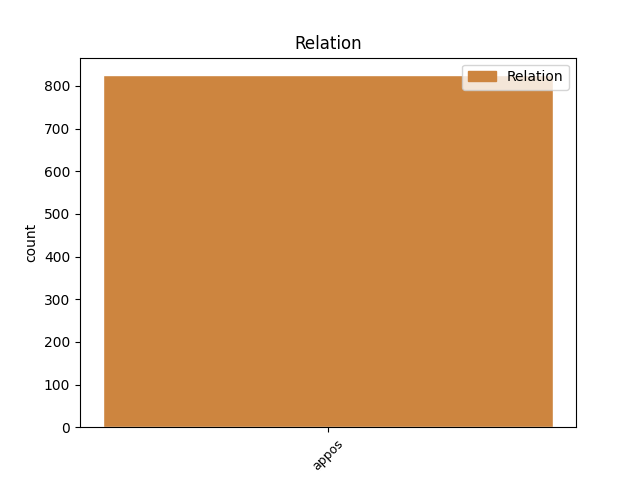
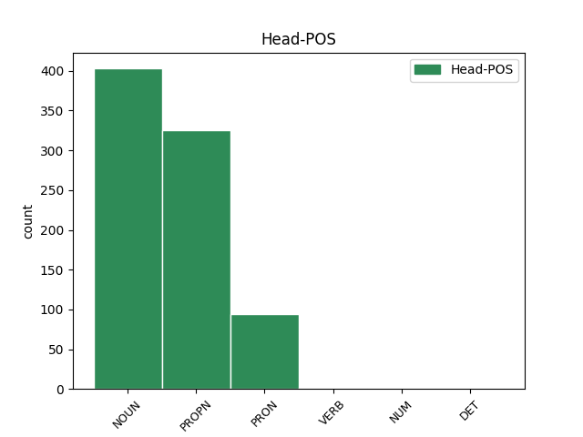
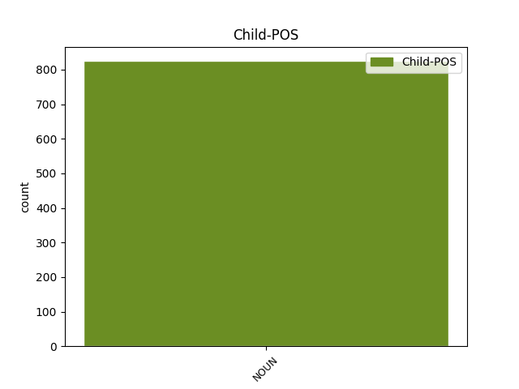

Distribution of features within this leaf



Agreement Rules sorted by frequency.
- When the dependent token is the appositional modifier(appos) of the head token, and the dependent token is NOUN.
1 Din _ _ _ _ 0 _ _ _
2 Luminată _ _ _ _ 0 _ _ _
3 poruncă _ _ _ _ 0 _ _ _
4 a _ _ _ _ 0 _ _ _
5 Mării _ _ _ _ 0 _ _ _
6 sale _ _ _ _ 0 _ _ _
7 Prea _ _ _ _ 0 _ _ _
8 Înălțatului _ _ _ _ 0 _ _ _
9 nostru _ _ _ _ 0 _ _ _
10 Domn _ _ _ _ 0 _ _ _
11 Io _ _ _ _ 0 _ _ _
12 Ioann _ _ _ _ 0 _ _ _
13 Gheorghie _ _ _ _ 0 _ _ _
14 Caragea Caragea PROPN Npmsry Case=Acc,Nom|Definite=Def|Gender=Masc|Number=Sing 0 _ _ _
15 , _ _ _ _ 0 _ _ _
16 Vv voievod NOUN Ncmsrn Case=Acc,Nom|Definite=Ind|Gender=Masc|Number=Sing 14 appos _ ref=ANAFORA.3|SpaceAfter=No
17 . _ _ _ _ 0 _ _ _
Disagree Examples:
1 Atuncea _ _ _ _ 0 _ _ _
2 răspunzînd _ _ _ _ 0 _ _ _
3 Pătru _ _ _ _ 0 _ _ _
4 zise _ _ _ _ 0 _ _ _
5 lui _ _ _ _ 0 _ _ _
6 Iisus _ _ _ _ 0 _ _ _
7 : _ _ _ _ 0 _ _ _
8 Ravvi ravvi NOUN Ncmsrn Case=Acc,Nom|Definite=Ind|Gender=Masc|Number=Sing 0 _ _ _
9 ( _ _ _ _ 0 _ _ _
10 Învățătoare învățător NOUN Ncmsvn Case=Voc|Definite=Ind|Gender=Masc|Number=Sing 8 appos _ ref=MARC9.5|SpaceAfter=No
11 ) _ _ _ _ 0 _ _ _
12 bine _ _ _ _ 0 _ _ _
13 -i _ _ _ _ 0 _ _ _
14 noao _ _ _ _ 0 _ _ _
15 să _ _ _ _ 0 _ _ _
16 fim _ _ _ _ 0 _ _ _
17 aicea _ _ _ _ 0 _ _ _
18 și _ _ _ _ 0 _ _ _
19 să _ _ _ _ 0 _ _ _
20 facem _ _ _ _ 0 _ _ _
21 trei _ _ _ _ 0 _ _ _
22 colibi _ _ _ _ 0 _ _ _
23 ( _ _ _ _ 0 _ _ _
24 Corturi _ _ _ _ 0 _ _ _
25 ) _ _ _ _ 0 _ _ _
26 : _ _ _ _ 0 _ _ _
27 Ție _ _ _ _ 0 _ _ _
28 una _ _ _ _ 0 _ _ _
29 și _ _ _ _ 0 _ _ _
30 lui _ _ _ _ 0 _ _ _
31 Moisi _ _ _ _ 0 _ _ _
32 una _ _ _ _ 0 _ _ _
33 și _ _ _ _ 0 _ _ _
34 lui _ _ _ _ 0 _ _ _
35 Ilie _ _ _ _ 0 _ _ _
36 una _ _ _ _ 0 _ _ _
37 . _ _ _ _ 0 _ _ _
1 ( _ _ _ _ 0 _ _ _
2 că _ _ _ _ 0 _ _ _
3 știia _ _ _ _ 0 _ _ _
4 că _ _ _ _ 0 _ _ _
5 pentru _ _ _ _ 0 _ _ _
6 pizma _ _ _ _ 0 _ _ _
7 , _ _ _ _ 0 _ _ _
8 ei el PRON Pp3mpr Case=Nom|Gender=Masc|Number=Plur|Person=3|PronType=Prs 0 _ _ _
9 L- _ _ _ _ 0 _ _ _
10 ară _ _ _ _ 0 _ _ _
11 fi _ _ _ _ 0 _ _ _
12 dat _ _ _ _ 0 _ _ _
13 pre _ _ _ _ 0 _ _ _
14 El _ _ _ _ 0 _ _ _
15 , _ _ _ _ 0 _ _ _
16 mai _ _ _ _ 0 _ _ _
17 marii mare NOUN Ncmpry Case=Acc,Nom|Definite=Def|Gender=Masc|Number=Plur 8 appos _ ref=MARC15.10
18 popilor _ _ _ _ 0 _ _ _
19 ) _ _ _ _ 0 _ _ _
20 . _ _ _ _ 0 _ _ _
1 Acesta _ _ _ _ 0 _ _ _
2 va _ _ _ _ 0 _ _ _
3 fi _ _ _ _ 0 _ _ _
4 mare _ _ _ _ 0 _ _ _
5 și _ _ _ _ 0 _ _ _
6 Fiiu _ _ _ _ 0 _ _ _
7 Celui _ _ _ _ 0 _ _ _
8 de _ _ _ _ 0 _ _ _
9 sus _ _ _ _ 0 _ _ _
10 chema _ _ _ _ 0 _ _ _
11 -Să _ _ _ _ 0 _ _ _
12 -va _ _ _ _ 0 _ _ _
13 , _ _ _ _ 0 _ _ _
14 și _ _ _ _ 0 _ _ _
15 -i _ _ _ _ 0 _ _ _
16 va _ _ _ _ 0 _ _ _
17 da _ _ _ _ 0 _ _ _
18 Lui _ _ _ _ 0 _ _ _
19 Domnul _ _ _ _ 0 _ _ _
20 Dumnezău _ _ _ _ 0 _ _ _
21 scaunul _ _ _ _ 0 _ _ _
22 lui _ _ _ _ 0 _ _ _
23 David David PROPN Npmsrn Case=Acc,Nom|Definite=Ind|Gender=Masc|Number=Sing 0 _ _ _
24 , _ _ _ _ 0 _ _ _
25 a _ _ _ _ 0 _ _ _
26 tatălui tată NOUN Ncmsoy Case=Dat,Gen|Definite=Def|Gender=Masc|Number=Sing 23 appos _ ref=LUCA1.32
27 Său _ _ _ _ 0 _ _ _
28 . _ _ _ _ 0 _ _ _
1 Și _ _ _ _ 0 _ _ _
2 rădică _ _ _ _ 0 _ _ _
3 cortul _ _ _ _ 0 _ _ _
4 ispăsenii _ _ _ _ 0 _ _ _
5 noao _ _ _ _ 0 _ _ _
6 , _ _ _ _ 0 _ _ _
7 în _ _ _ _ 0 _ _ _
8 casa _ _ _ _ 0 _ _ _
9 lui _ _ _ _ 0 _ _ _
10 David David PROPN Npmsrn Case=Acc,Nom|Definite=Ind|Gender=Masc|Number=Sing 0 _ _ _
11 , _ _ _ _ 0 _ _ _
12 coconului cocon NOUN Ncmsoy Case=Dat,Gen|Definite=Def|Gender=Masc|Number=Sing 10 appos _ ref=LUCA1.69
13 Său _ _ _ _ 0 _ _ _
14 . _ _ _ _ 0 _ _ _
1 Și _ _ _ _ 0 _ _ _
2 de _ _ _ _ 0 _ _ _
3 giurămîntul _ _ _ _ 0 _ _ _
4 carele _ _ _ _ 0 _ _ _
5 Să _ _ _ _ 0 _ _ _
6 giură _ _ _ _ 0 _ _ _
7 lui _ _ _ _ 0 _ _ _
8 Avram Avraam PROPN Npmsrn Case=Acc,Nom|Definite=Ind|Gender=Masc|Number=Sing 0 _ _ _
9 , _ _ _ _ 0 _ _ _
10 părintelui părinte NOUN Ncmsoy Case=Dat,Gen|Definite=Def|Gender=Masc|Number=Sing 8 appos _ ref=LUCA1.73
11 nostru _ _ _ _ 0 _ _ _
12 , _ _ _ _ 0 _ _ _
13 să _ _ _ _ 0 _ _ _
14 dea _ _ _ _ 0 _ _ _
15 noao _ _ _ _ 0 _ _ _
16 să _ _ _ _ 0 _ _ _
17 slujim _ _ _ _ 0 _ _ _
18 lui _ _ _ _ 0 _ _ _
19 . _ _ _ _ 0 _ _ _